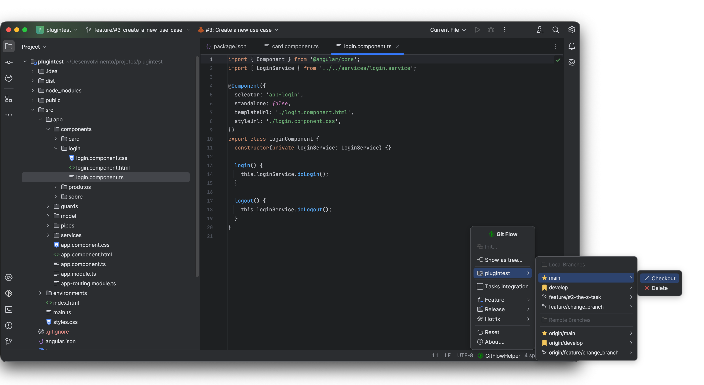

Protect your team's Git history from human error. GitFlow Helper intercepts direct commits, verifies untracked changes, and provides instant keyboard muscle memory.
Automated interceptors active across every Git action to prevent broken repository states.
Powered by IntelliJ's CheckinHandler, GitFlow Helper monitors commit actions. If a developer attempts to commit directly to main or develop, the commit is intercepted with a clear warning dialog advising them to switch to a dedicated feature or hotfix branch.
Before finishing any feature, release, or hotfix, GitFlow Helper scans the working tree for dirty or uncommitted modifications. If found, finishing is halted to prevent silent stash or file loss, prompting the developer to commit or stash first.
Verifies that all local commits have been pushed upstream before deleting branches or finishing work. This guarantees that your team never deletes a local branch that contains unpushed commits forgotten in local history.
If your working branch is behind develop (e.g. ⬇ 3 commits), finishing is strictly prevented. The developer is required to use 1-Click Sync first to resolve any merge conflicts in their own branch before merging upstream.
main or develop branches.
Fly through branch operations with dedicated key bindings designed for speed and muscle memory.
| Operation | macOS Shortcut | Windows / Linux Shortcut | Target Base | Action Description |
|---|---|---|---|---|
| Feature Start | ⌃ ⌥ 1 | Ctrl + Alt + 1 | develop |
Creates a new local feature branch (with optional task binding). |
| Feature Publish | ⌃ ⌥ 2 | Ctrl + Alt + 2 | remote origin | Pushes the current feature branch to remote VCS and sets upstream tracking. |
| Feature Finish | ⌃ ⌥ 3 | Ctrl + Alt + 3 | develop |
Merges into develop (or opens GitLab MR / keeps branch) and cleans up. |
| Release Start | ⌃ ⌥ 4 | Ctrl + Alt + 4 | develop |
Forks release branch from develop for stabilization and version bump. |
| Release Publish | ⌃ ⌥ 5 | Ctrl + Alt + 5 | remote origin | Publishes release branch to remote repository for team QA validation. |
| Release Finish | ⌃ ⌥ 6 | Ctrl + Alt + 6 | main + develop |
Merges into main and develop, tags release version tag, and deletes branch. |
| Hotfix Start | ⌃ ⌥ 7 | Ctrl + Alt + 7 | main |
Creates emergency hotfix branch directly from production main. |
| Hotfix Publish | ⌃ ⌥ 8 | Ctrl + Alt + 8 | remote origin | Publishes hotfix branch upstream for peer review and staging smoke test. |
| Hotfix Finish | ⌃ ⌥ 9 | Ctrl + Alt + 9 | main + develop |
Merges hotfix into both main and develop, tags patch release, and cleans up. |
All shortcuts can be reconfigured at any time inside your IDE under:
Settings (Preferences) → Keymap → Plugins → GitFlow Helper.
